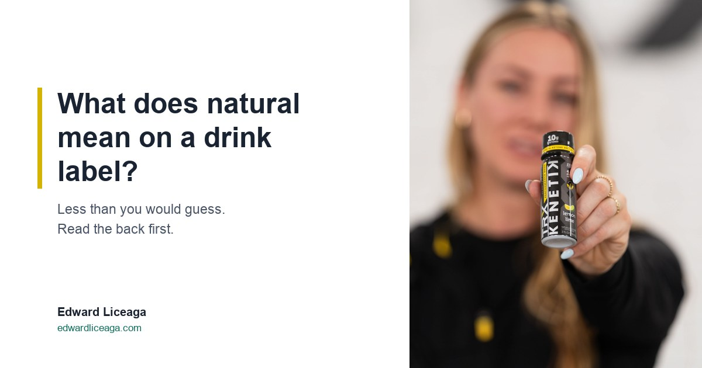

What Does Natural Mean on a Drink Label? Less Than You Would Guess
The FDA has never formally defined the word. Here is what its policy covers, what it leaves out, and what to read instead.

I turn drinks around before I buy them. The front of a bottle is there to sell it, and the back is where the maker has to say what is inside.
"Natural" is the word I see most often on the front, and it tells me the least. So I went to the source. If you have ever asked what does natural mean on a drink label, the answer is narrower than most people assume.
Disclosure up front: I sell a ketone drink, Kenetik, through a referral link and earn a commission when someone buys through it. Near the end I put its own label through the same test, so read that part with the commission in mind.
What the FDA actually says
The FDA oversees labels on packaged food, and drinks fall under the same rules. On "natural," the agency's own page says it "has not engaged in rulemaking to establish a formal definition" for the term.
What it has is a longstanding policy. The FDA reads "natural" to mean that nothing artificial or synthetic, including any color additive regardless of source, has been included in or added to a food that would not normally be expected to be in it.
The policy stops there, and it is about additives only. The FDA page explaining it was last updated in October 2018. A public comment period on the word closed in May 2016, and no formal definition has followed.
What the word leaves out
The same FDA page lists what the policy does not address, and that list is the useful part.
It does not cover how the ingredients were produced, including the use of pesticides. It does not cover processing or manufacturing; the FDA's own examples are thermal technologies, pasteurization, and irradiation. It also does not say whether "natural" should describe any nutritional or health benefit.
That last point matters most at the cooler. A drink can carry a lot of sugar and still fit the policy, because sugar is not artificial. The word says nothing about calories, sugar, caffeine, or whether the drink does anything for you.
So the most honest answer to what does natural mean on a drink label is this: the maker considers that nothing artificial was added that you would not expect to find. Everything else you have to read for yourself.
Read the back first
I spent years reading bank statements to fund businesses, and the habit is the same one. The pitch tells you what someone wants you to believe. The statement tells you what happened.
On a drink, the statement is the Nutrition Facts panel. That is where federal rules get specific: calories are printed in large type, and added sugars have to be listed in grams. A number is much harder to dress up than an adjective.
Here is the order I read a label in:
- Calories and added sugars. A drink you have every afternoon adds up over a month.
- Caffeine. If the drink has it, find out how much and when you would be drinking it. A 3 PM dose is still partly working at bedtime, and I worked through that arithmetic in The Coffee You Drank at 3 PM Is Still Working at Midnight.
- The ingredient list. If a word on the front matters to you, this is where you check whether the contents back it up.
- Third party testing. If you are a tested athlete, or you just want an outside check, look for a certification mark and know what it covers. I explained one of them in Informed Sport Certified: What Third Party Testing Actually Means.
The same test on the drink I sell
Kenetik's label says "nothing artificial." By the FDA's own reading, that phrase covers the same ground as "natural": it is a statement about what was added. It says nothing about how the drink was made or what it does for you, and I would rather point that out myself than have you notice it later.
So judge it on the panel. The can is 12 ounces with 12 grams of ketones, 60 calories, zero sugar, and zero caffeine. The TRX shot is a 2 ounce bottle with 10 grams of ketones plus electrolytes, also caffeine free and sugar free. Both are Informed Sport certified.
The ketones are the reason anyone buys it. They are a fuel your brain already knows how to use, and there is no stimulant in the drink. It supports clarity, focus, and cognitive endurance, and I am not going to stretch that claim. If you want to know where it fits in a day, Best Time of Day to Drink Ketones covers that.
A week of reading labels
For the next seven days, turn every drink around before you open it. Read calories, added sugars, and caffeine, in that order, and ignore the front.
Most people find at least one drink they bought for a word on the front that does not hold up on the back. That is worth knowing whether or not you ever try mine.
Caffeine free, sugar free. My link if you want to try it: https://drinkkenetik.com/EDDIEG
Promo code: EDDIEG
I earn a commission on purchases through this link. This article is consumer information and is not medical advice. FDA policy quoted from "Use of the Term Natural on Food Labeling," fda.gov, checked October 5, 2026.